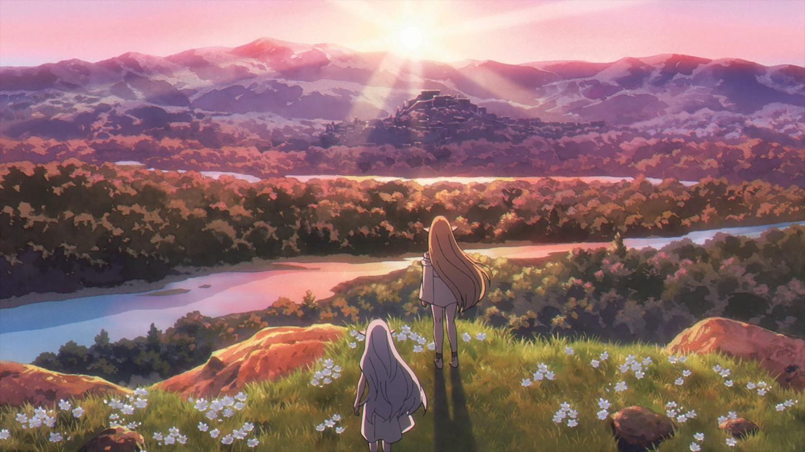

A Journey Beyond Time and Memories
✧ ────────── ✦ ────────── ✧
❝ Some journeys never truly end. ❞
Discover a world of magic, friendship, and unforgettable memories.
Follow Frieren and her companions on their journey.

✧ A world filled with magic and wonder ✧
── ✦ ── ✧ ── ✦ ──
The legendary companions who defeated the Demon King.
An elven mage who discovers the meaning of time and human connections.
The brave hero whose kindness leaves a lasting mark on Frieren.
The cheerful priest who supports his friends throughout their adventure.
The strong and dependable warrior of the Hero Party.
── ✦ ── ✧ ── ✦ ──
A new journey begins with new friends and new memories.
Frieren's talented apprentice who is calm, responsible, and caring.
A young warrior who learns to face his fears and protect his friends.
A priest who joins the party and brings wisdom and humor to their journey.
Frieren's journey reminds us that even ordinary moments
can become precious memories.
Through friendship, adventure, and magic,
she learns to understand the people around her.
✧ ── ✦ ── ✧
"The memories we make are what make our journeys meaningful."
Frieren: Beyond Journey's End
✧ ── ✦ ── ✧